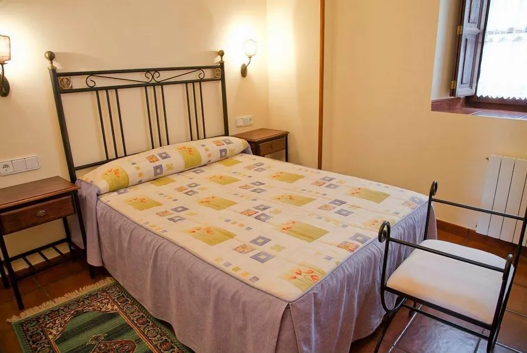
2personasPara dos · 4 apartamentos
La escapada en pareja: dormitorio, salón con TV y cocina americana equipada. Algunos apartamentos tienen bañera de hidromasaje para la vuelta de la ruta.
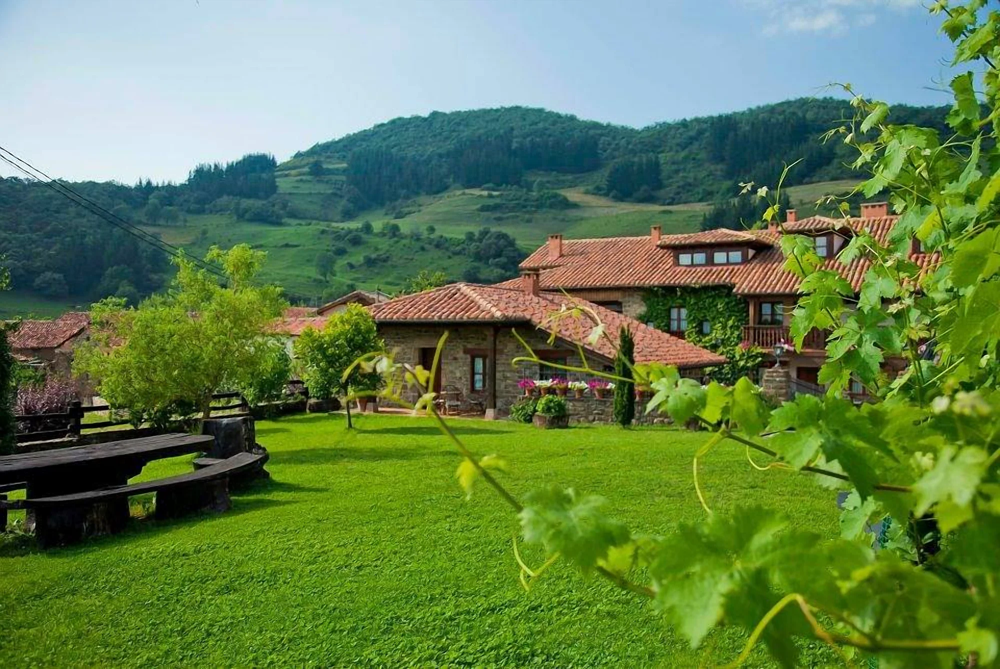
Torices · Valle de Liébana · Cantabria
Quince apartamentos en una antigua hacienda montañesa restaurada, con piscina, sauna y jacuzzi, en un pueblo tranquilo del Valle de Liébana.
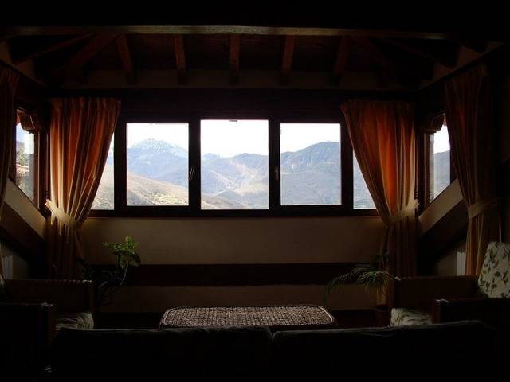
La hacienda
Torices es un pueblo de montaña que todavía vive al ritmo del campo, con el valle de Valderrodies abierto delante. Aquí, una hacienda de más de trescientos años se restauró al estilo montañés y se convirtió en quince casas para quedarse.
Arquitectura montañesa
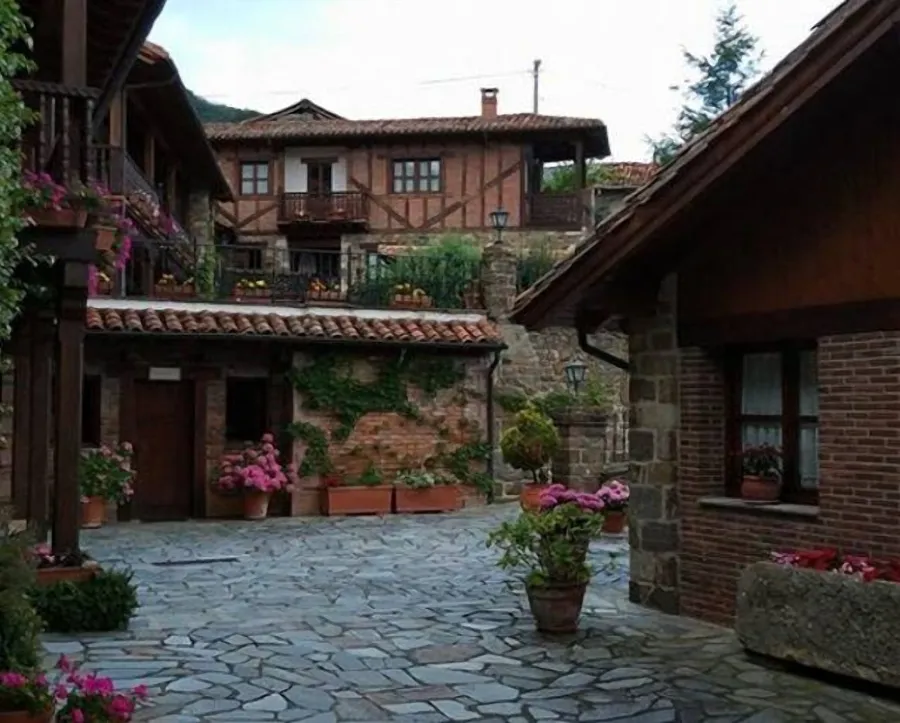
IMuros de piedra con más de tres siglos encima. La restauración respetó la arquitectura tradicional de la montaña cántabra, sin disfrazarla: piedra vista, patios empedrados y rincones de los de antes.
 II
II
Corredores y balcones de madera, vigas vistas en los techos, muebles con historia. Es la madera la que hace que cada apartamento se sienta casa desde que abres la puerta.
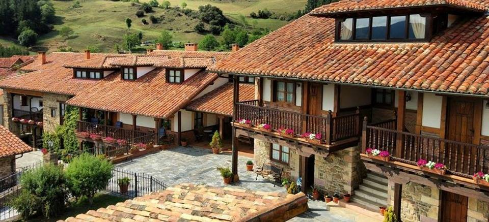
IIIDesde el jardín, los tejados rojos se escalonan uno tras otro. Una huésped lo resumió en una frase: «la hacienda parece un pueblecito».
Geranios en las barandillas, hortensias en el patio y una huerta-jardín que rodea los apartamentos. Aquí las flores también son parte de la casa.
Los apartamentos
Apartamentos de hasta 100 m², totalmente equipados, para 2, 4, 6 u 8 personas, y todos admiten cama supletoria. Cuatro para parejas, nueve para cuatro, uno para seis y uno para ocho: cabe una pareja que busca silencio y cabe una familia entera que viene a celebrar algo.

2personasLa escapada en pareja: dormitorio, salón con TV y cocina americana equipada. Algunos apartamentos tienen bañera de hidromasaje para la vuelta de la ruta.
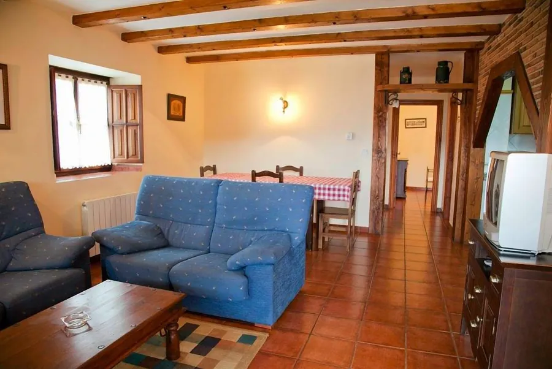
4personasDos dormitorios, salón con sofás y una mesa de comedor larga para las cenas en familia o con amigos. Todo listo para llegar y deshacer la maleta.
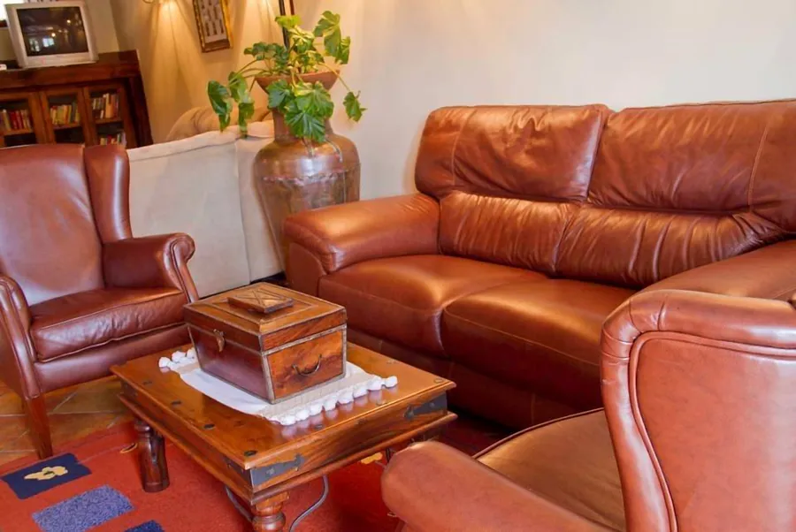
6personasPara familias o dos parejas que viajan juntas: espacio de sobra, salón amplio y cocina completa, con cama supletoria si hace falta.
 8personas
8personasPara grupos y familias grandes. Si sois más, se juntan varios apartamentos y tenéis la bodega, con cocina y mesa para unas 20 personas.
Por dentro
Vigas de madera, luz cálida y sitio para todos.

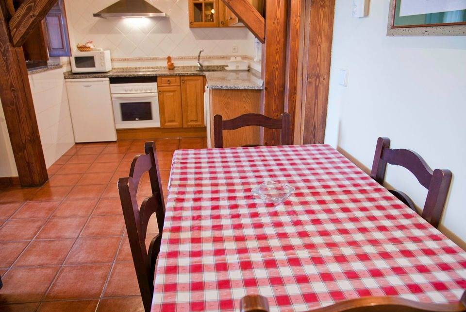
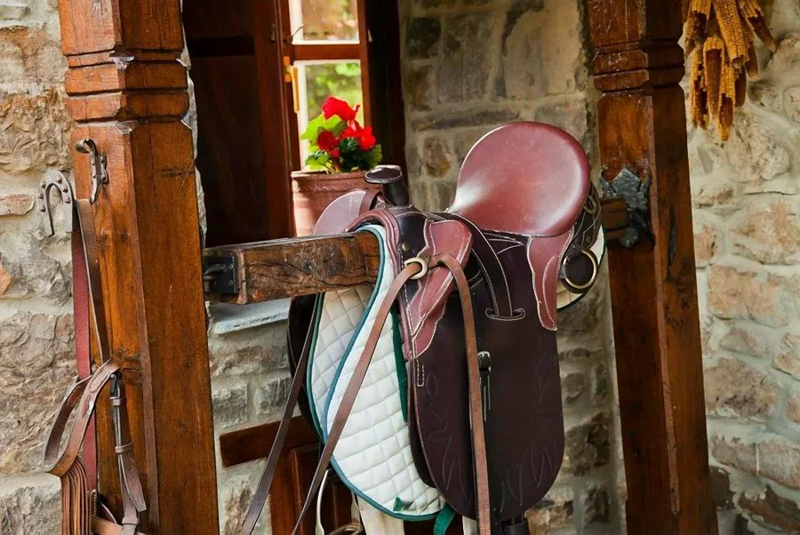
Spa y piscina
«Salus per aquam»: salud a través del agua. Piscina exterior con el valle alrededor y una zona de spa con jacuzzi, baño turco, sauna y duchas de contraste frío/calor para cerrar el día como merece. El spa se contrata aparte.
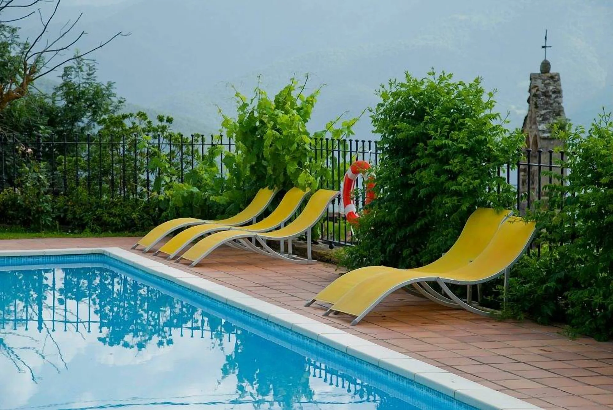
La piscina, con el monte detrás
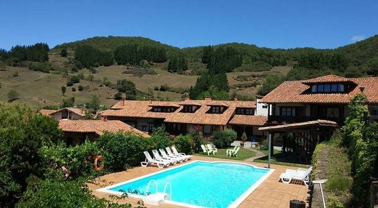
Tumbonas, césped y los tejados de la hacienda alrededor. El plan de las tardes de verano.

Calor seco o vapor, y duchas de contraste frío/calor para salir nuevo.

Agua caliente y burbujas después de una ruta por los Picos. No hace falta más.
La vida en la hacienda
Jardines, barbacoas, un salón social con biblioteca y aparcamiento cerrado. Todo lo de una casa grande, compartido con calma.
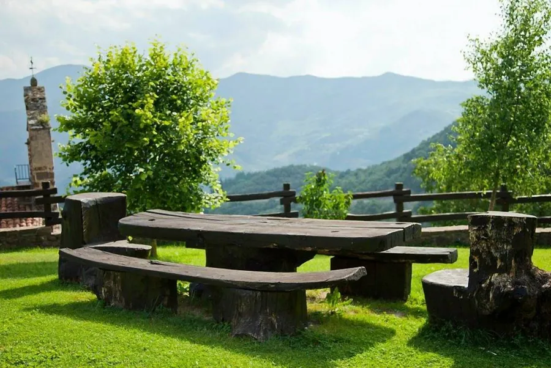
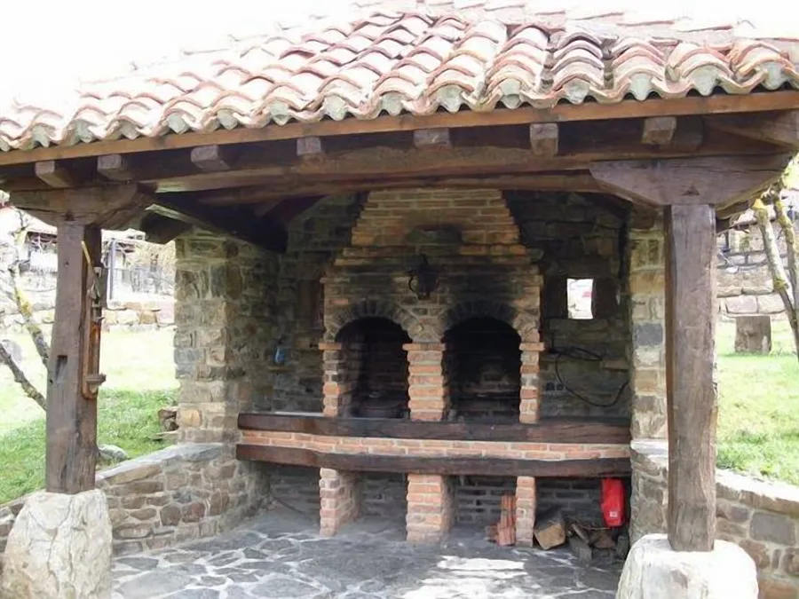

20
La bodega. Cocina propia y mesa para unas veinte personas: reuniones familiares, cumpleaños, grupos de amigos.

«Ha sido el sitio que escogimos Patricia y yo para casarnos y no hemos podido escoger mejor sitio.»
Oscar · reseña en Google
El entorno
Rutas de paseo, deporte de aventura, bicicleta y rutas a caballo. Románico, monasterios, pueblos de piedra y, a 40 km, las playas del Cantábrico. Todo a partir de Torices.

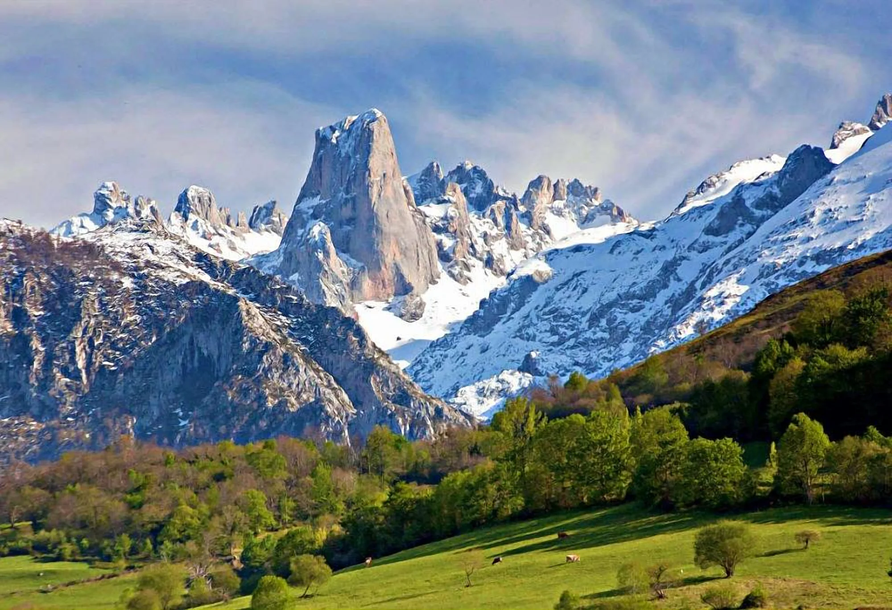
Y arriba
Los Picos de Europa: Fuente Dé, su teleférico y rutas para todas las piernas.
Galería
Cómo llegar
En Cabezón de Liébana, a 10 km de Potes por carretera asfaltada y a 40 km de la costa. Aparcamiento cerrado dentro de la hacienda.
C/ Real s/nPreguntas frecuentes
Hay 15 apartamentos: 4 para 2 personas, 9 para 4, 1 para 6 y 1 para 8. Todos admiten cama supletoria. Para grupos grandes se reservan varios apartamentos y la bodega, con cocina y mesa para unas 20 personas.
Salón, cocina americana completa, baño (algunos con bañera de hidromasaje), sábanas, mantas, menaje y productos de limpieza. Tienen hasta 100 m².
Piscina exterior con tumbonas, zona spa (jacuzzi, baño turco, sauna y duchas de contraste; se contrata aparte), salón social con biblioteca, bodega para grupos, huerta-jardín, barbacoas y aparcamiento cerrado.
Sí. Los apartamentos se alquilan por días, semanas, quincenas o meses.
Hay cunas de bebé sin coste añadido. Pídela cuando nos escribas para tenerla preparada.
Escríbenos por WhatsApp o llama al 607 32 81 87 (o escribe a lahaciendademaria@gmail.com) con las fechas y cuántos sois, y te decimos qué apartamentos quedan libres. También estamos en Booking.
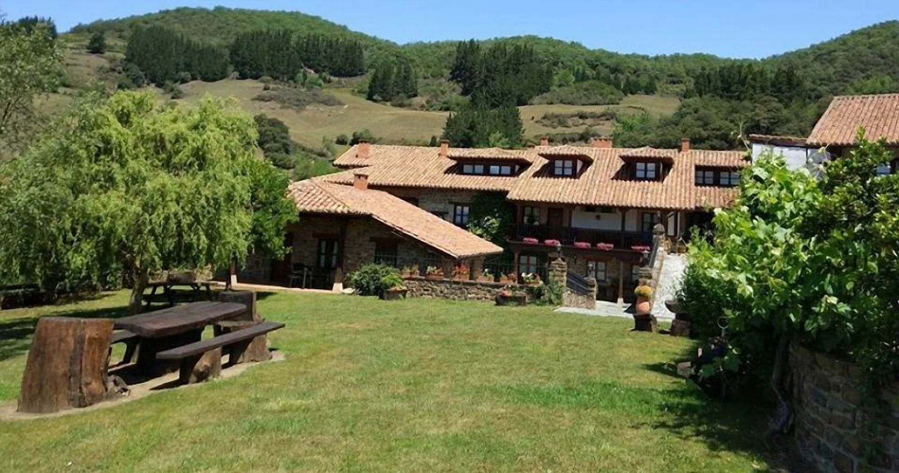
Reserva directa
Cuéntanos fechas y cuántos sois. Te contestamos con los apartamentos libres, sin intermediarios.
¿Prefieres Booking? Ver la fichaDemo preparada por Upscall · fotos y reseñas reales de La Hacienda de María